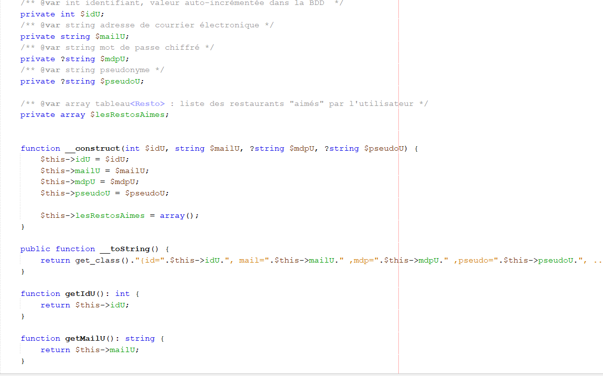
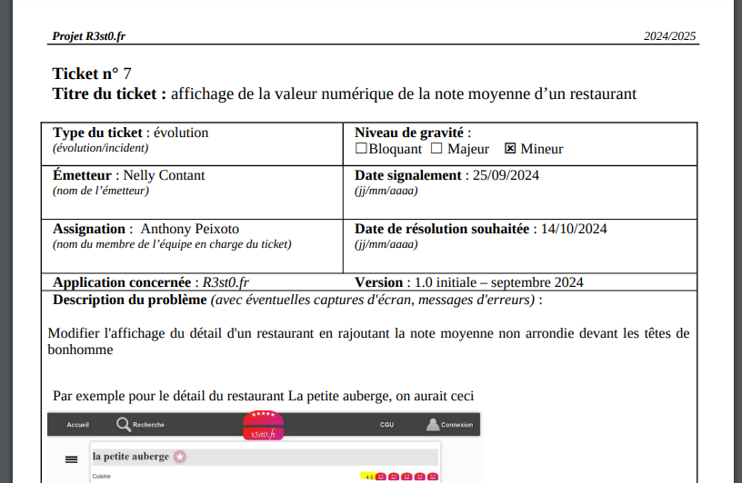
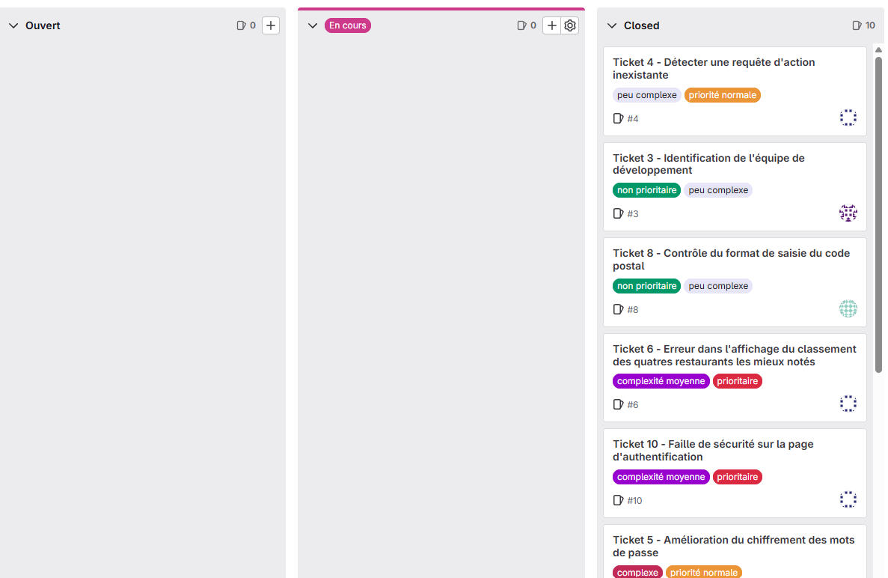

Ce projet web avait pour objectif la mise à jour d’un site existant ainsi que l’ajout de nouvelles fonctionnalités. Le site en lui-même avait pour rôle de répertorier différents restaurants et de permettre aux utilisateurs de les noter ainsi que de donner leur avis. Plusieurs systèmes de filtre permettent une recherche plus fine.
Compétences acquises :
Exploiter des référentiels, normes et standards adoptés par le prestataire informatique : En développement, il est important de suivre de bonnes pratiques et de respecter certaines normes afin d’avoir une organisation simple et claire, d’apporter plus de portabilité à un projet et de permettre facilement le travail en équipe. Par exemple, ce projet-ci devait respecter des règles de nommage, une documentation de code, etc. On peut observer ci-dessous que le code est documenté et que les variables utilisées ne sont pas nommées au hasard, mais sont explicites. On peut aussi observer que le code est bien indenté et qu'il n'y a aucune répétition de code.

Gérer des sauvegardes : Avoir à disposition un lieu permettant de garder les traces de son travail accessibles à toute personne en ayant besoin. La mise en place d’un système de versionning et de sauvegarde m'a permis de suivre l’évolution du projet et de prévenir toute perte de données. Pour cela, nous avons utilisé Gitlab pour centraliser le code. Chacun de ceux-ci est méthodiquement nommé pour plus de facilité.
Le lien du Gitlab se trouve au pied de la page.
Collecter, suivre et orienter des demandes : Cette compétence a été mise en œuvre lors du recueil des besoins utilisateurs et du suivi des ajustements à apporter sur le site.
Traiter des demandes concernant les applications : Nous avons pris en charge et résolu plusieurs demandes d’évolution et de correction sur les fonctionnalités existantes du site.
Pour les deux compétences ci-dessus, nous avons répondu à différents tickets utilisateurs et leurs demandes. L'intérêt de ce projet a été de découvrir ce qu'étaient réellement des demandes utilisateurs, tout en respectant une durée maximale (deadline), ce qui a poussé à une plus haute organisation des différentes tâches.
Vous pouvez retrouver des exemples de tickets où j'ai pu être attribué pendant le projet.

Participer à la valorisation de l’image de l’organisation sur les médias numériques en tenant compte du cadre juridique et des enjeux économiques : Respecter l'identité numérique d'une entreprise ainsi que son budget pour améliorer son expression dans le milieu digital et avoir une plus grande visibilité, tout en vérifiant que les lois soient respectées. Ici, j'améliore le site internet afin que l'organisation soit mieux représentée. Vis-à-vis des utilisateurs, nous leur demandons uniquement les données obligatoires au bon fonctionnement du site internet pour respecter le RGPD. Nous avons également une page réservée aux conditions d'utilisation du site.
Participer à l’évolution d’un site Web exploitant les données de l’organisation : Améliorer un site internet en utilisant le code ainsi que, par exemple, les bases de données d'une organisation. Nous utilisons la base de données de l'organisation pour développer les diverses fonctionnalités liées à la filtration de restaurants, la notation, les commentaires, etc.
Planifier les activités : Mettre en œuvre une organisation du projet. L’utilisation des fonctionnalités de planification sur GitLab nous a permis de répartir les tâches au sein de l’équipe et d’anticiper les différentes étapes du projet.
Évaluer les indicateurs de suivi d’un projet et analyser les écarts : Mettre en œuvre des indicateurs permettant de suivre notre avancée sur le projet, notre retard et nous réadapter à la situation en reconsidérant nos priorités. GitLab a également servi à suivre l’avancement de chaque tâche. Nous avons ainsi pu ajuster notre planification selon les écarts constatés entre les prévisions et la réalité.

Déployer un service : Mettre en place, pour le public cible, l'accès à l'application sans avoir besoin de vous pour y accéder. Permettre au site internet d'avoir un accès en ligne public. Pour cela, j'utilise le serveur désigné par l'école pour y mettre le site grâce au logiciel FileZilla.
Accompagner les utilisateurs dans la mise en place d’un service : Proposer un protocole aux utilisateurs pour avoir accès à une application. Ici, dans le cadre d'un entraînement à l'E6 lié à ce projet-ci, j'ai indiqué toutes les démarches nécessaires à la mise en place de ce site internet. Vous pouvez trouver la fiche explicative ci-dessous.